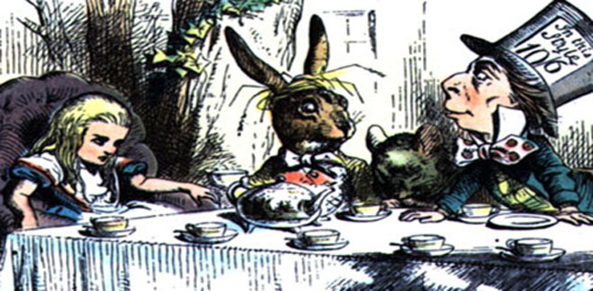

Literary Interpretation

`Have some wine,' the March Hare said in an encouraging tone.
Alice looked all round the table, but there was nothing on it but tea. `I don't see any wine,' she remarked.
`There isn't any,' said the March Hare.
Welcome to an experimental section of Literary Interpretation where students will join the professor and a team of doctoral students in an interdisciplinary research and publication project on studying and teaching about food in English literature courses!
We will consider food as a topic in literary works from different genres and periods as well as contemporary questions of food justice, health, and sustainability. Working in groups students will read in the emerging field of food studies, as well as novels, film, young adult literature, etc. Students will write blogs, literary analysis, research pieces, as well as engage in community-based activities.
This class will develop skills of literary interpretation relevant to advanced work in English. We will undertake extensive and careful reading, research, maintaining a class blog, and write literary analysis papers as we follow English 1100 catalog description and course objectives.
[Previous experimental sections of English 1100 have addressed English teaching and new technologies (2006) and the Middle East (2007 & 2009). These courses have resulted in widely read articles and books (Literature and the Web, Teaching the Literature of Today's Middle East) where the thinking and writing of students from the course are extensively cited, quoted, and explored.]
Given the experimental nature of this class, the current syllabus is provisional and will evolve with the course.
Everyone Eats
The phrase "everyone eats" can be read as an expression of the necessity of food to human life, an assertion of basic human rights, and an ecstatic invitation to one of life's great renewable pleasures.
Yet, nearly 1 billion people world-wide, and 1 in 6 Americans, have limited access to food. 16,000 children die every day from hunger and every 20 seconds a child dies of water-related illness – a jumbo jet crashing every 4 hours. Half of all American children will at some point during their childhood reside in a household that uses food stamps for a period of time.
We live in a world that is both starved and stuffed. Obesity afflicts more than 1/3 of Americans and is a growing health problem world-wide. College students struggle to eat healthy, balanced diets and are often workers in the food industry.
The problem is not simply a lack of food, but profound inequality of rich and poor. Today and tomorrow issues of food security also entail collective failure to address global warming.
Food, food production, food justice, and the food movement are key areas for literature study. In this regard Upton Sinclair's 1906 muck-raking novel The Jungle is a crucial text. Food is also theme is many classic literary works from ancient texts such as the Satyricon, to Shakespeare's plays, Swift's Modest Proposal, Steinbeck's Grapes of Wrath, and contemporary young adult works from Charlie and the Chocolate Factory to The Hunger Games.
A Few Specifics
Our section is held in a special wireless, laptop classroom in 3037 Brown Hall that I designed and that will accommodate a range of activities using the Internet and other technologies. A blog post of approximately 300 words should be completed before every class meeting.
Attendance will be taken and missing classes will lower your grade. Since the class is discussion-based, attendance and preparation are essential to your own learning and to the learning of your classmates. Missing any classes will affect your learning. Missing three classes will lower your final grade and missing five or more classes may lead to failing the course. See my philosophy regarding preparation, attendance, and participation.
This course will follow WMU policies regarding academic honesty.
WMU has many resources to foster student health and well-being. I support the Safe on Campus environment (387-2123). If at any point in the semester if you feel stress, English 1100 offers free on-line therapy from Eliza!
My office is 723 Sprau Tower, 387-2605, and my office hours are M/W afterclass, and by appointment and email at allen.webb@wmich.edu.
Sign up to receive texts and course information. On your cell phone Text "e1100" to 586 439-5053. (If you don't have a cell you can receive info via email, send a blank email to e1100@mail.remind101.com.)

One of:
The Omnivor's Dilemma: A History of Four Meals (2006) by Michael Pollan
Fast Food Nation:The Dark Side of the All-American Meal (2001) by Schlosser
Food Politics: How the Food Industry Influences Nutrition and Health (Revised Edition, 2007) by Marion Nestle
Stuffed and Starved: The Hidden Battle for the Word Food System (2012) by Raj Patel
American Way of Eating: Undercover at Walmart, Applebees, Farm Fields and the Dinner Table (2012) by Tracie McMillan
Slaughterhouse: The Shocking Story of Greed, Neglect and Inhumane Treatment Inside the US Meat Industry (2006) by Gail Eisnitz
The Hunger Games by Suzanne Collins (2007)
The Jungle (available on-line)
Additional works to be determined
Major Assignments
 |
Blog Assignments / Participation (25%) Paper 1: Personal Essay (10%) Paper 2: Close Reading Paper (15%) Paper 3: Literary Analysis (15%) Paper 4: Final Project(s) (25%) Final Exam: Your "Ted Talk" (10%) |
Electronic Syllabus
Jan 8 Wed: Introductions, Form Literature Circles, Start Blog
In class:
1. Welcome and Introductions
2. Examine Dr. Webb's blog: Food / Literature
2. Create your own blog at Blogger.com. Send URL to Dr. Webb.
Jan 13 Mon: Food Lit, Food Studies & Food Systems
1. Blog post on topic of food and you.
2. View 2-3 Ted Talks about Food, select 3 min clip to share
3. Read sample essay: "Literature from the Modern Middle East"
Jan 15 Wed:
1. Read: First 100+ pages of your literature circles food studies text.
2. Blog post responding to your food studies reading.
Jan 20 Mon: No Class, Martin Luther King, Jr. Holiday
Jan 22 Wed:
1. Read: Next 100+ pages of your literature circles text.
2. Blog post responding to your reading.
Jan 27 Mon Food Film
1. View contemporary food documentary such as Food Inc, King Corn, Black Gold, Children of the Harvest, Bananas, Super Size Me, Dive, etc.
2. Blog post responding to film.
Jan 29 Wed Food and You
1. Food Personal Essay Due
Feb 3 Mon Food Literature and Inequality
1. Read The Dinner of Trimachio (26-78) from the Satyricon (Written during the reign of Nero.)
2. Blog post responding to reading.
Feb 5 Wed Food and Our Community
1. Study websites for Kalamazoo Loaves and Fishes and for the Kalamazoo People's Food Co-Op.
2. Blog post responding to one of the websites.
3. MEET at Kalamazoo Loaves & Fishes | 901Portage St at 10:00 or carpool from Miller Auditorium at 9:30.
Feb 10 Mon Modest Proposals
1. Read Swift's Modest Proposal (Written in 1729, brief historical context.)
2. Blog post responding to reading.
3. Read Guatemala background: 1954 Coup d'etat & Civil War & Malnutrition Crisis
Feb 12 Wed Guatemala, Food, and (the) US
1. Read La United Fruit Company (Neruda) & selection from I, Rigoberta Menchu (Chapters 1,4,6,9,13,20,32)
2. Blog post responding to reading, especially Menchu and also background on Guatelmala (1954 Coup & Civil War & Malnutrition).
3. Before Monday, Feb 17, post on blog your own Modest Proposal in relation to the food industry.
Feb 17 Mon Migrant Workers in Contemporary America
1. Selections from And the Earth Did not Devour Him (Bilingual), Cajas de Carton English / Spanish.
2. Blog post responding to reading about migrant workers.
3. Your own Modest Proposal in relation to the food industry.
Feb 19 Wed The Jungle
1. Read from Upton Sinclair's The Jungle (1906) Chapters 2-5. (And read about the novel on: Wikipedia on The Jungle)
2. Blog post responding to reading.
Feb 21 Fri
Visit to JBS Packerland (Plainwell), leave WMU 12:30
Feb 24 Mon
1. Read assigned chapters from Upton Sinclair's The Jungle (1906). Prepare to present to the class the critiques and specifics from the chapters you read.
Group 1: Chapters 6-13
Group 2: Chapters 14-20
Group 3: Chapters 21-26
Group 4: Chapters 27-322. Blog post responding to reading.
Feb 26 Wed
1. Read The Hunger Games (2008) Chapters 1-5
2. Blog post responding to reading.
Spring Break, Mar 3-7
Mar 5 Wed 7:00 pm Tracie McMillan (author of The American Way of Eating) speaks at Kalamazoo Central High School Auditorium sponsored by Kalamazoo Public Library.
Mar 10 Mon
1. Read The Hunger Games Chapter 6-18
2. Blog post responding to reading.
Mar 10 Mon 12:00-1:15 pm Food Film Series Asparagus: Stalking the American Life, Kalamazoo Valley Museum, Stryker Theater, 230 N Rose Street
Mar 11 Tues 6:30 pm Raising Animals for Food farmers perspective, Oshtemo Branch library 7265 West Main St. sponsored by Kalamazoo Public Library.
Mar 12 Wed
1. Finish The Hunger Games
Mar 17 Mon Contemporary Food Novel
1. Due: Close Reading Paper Food Literature and Inequality
2. Begin novel
3. Blog post responding to reading.
Potential Food Novels & Novels chosen by our class:
A Moveable Feast (Ernest Hemingway)
Edible Stories (Mark Kurlansky)
Nectar in a Sieve (Kamala Markandya)
Ham on Rye (Charles Bukowski)
Winter Girls (Laurie Anderson)
Like Water for Chocolate (Laura Esquivel)
Five Quarters of the Orange (Joanne Harris)
Bone in my Throat (Anthony Bourdain)
Stir it Up (Robin Ganeshram)
Mar 17 Mon 12:00-1:15 pm Food Film Series Soul Food Junkies, Kalamazoo Valley Museum, Stryker Theater, 230 N Rose Street, sponsored by Kalamazoo Public Library.
Mar 18 Tues 6:30 pm The Farming Life farmers perspective, Oshtemo Branch library 7265 West Main St., sponsored by Kalamazoo Public Library.
Mar 19 Wed
1. Continue novel
2. Blog post responding to reading.
Mar 19 Wed 7:00 Midwestern Writers on Food Peggy Wolff and Bonnie Jo Campbell, People's Church 1758 N 10th St., sponsored by Kalamazoo Public Library.
Mar 24 Mon
1. Continue novel
2. Blog post responding to reading.
Mar 24 Mon 12:00-1:15 pm Food Film Series Grow, Kalamazoo Valley Museum, Stryker Theater, 230 N Rose Street, sponsored by Kalamazoo Public Library.
Mar 26 Wed
1. 2-3 Pages rough draft of your Literary Analysis Paper Due
Mar 26 Wed 6:30 pm, Beyond Food for Thought Portage District Library Stories from Community Members inspired by American Way of Eating and Farm City., sponsored by Kalamazoo Public Library.
Mar 27 Thurs: 5:00 & 7:00 pm, film: A Place at the Table, free benefit showing Alamo Draft House Cinema, Kalamazoo, sponsored by Kalamazoo Loaves and Fishes & Public Library.
Open Syllabus
The section below began as completely open. Possibilities included: more food literature, academic/culinary research, service learning, public writing, curriculum development.
Extensive discussions, interests of particular students, projects developed, led to the activities now listed. The class project College Cookbook draws on many aspects of our course and includes not only recipes but also information about food, food systems, and food and culture for college students and interested readers.
Mar 31 Mon
1. Literary Analysis Paper Due
Discussion of Final Project
Creation of CollegeCookbook.wikispaces.com
Discussion of Final Exam: Your "Ted Talk"
Discussion of different world food cuisines in Kalamazoo.
Blog Post: on a visit to a restaurant with a food tradition new to you (some local possibilities: Indian, Malaysian/Indonesian, Thai, Chinese, Nigerian, Peruvian, Mexican, Middle Eastern)
Apr 1 Tues: 6:30 pm The Farmworker's Story: Farmworkers Speak, Washington Square Branch, 1244 Portage Rd., sponsored by Kalamazoo Public Library.
Apr 2 Wed Food, Video Games, and Popular Culture
Presentation by Casey Watts and Joe Starr
Blog Post: on an ironic representation of food in popular culture.
Apr 3 Thurs: 7:00 pm Food Security or Food Justice: Does it Really Matter, Karika Phillips, Bronson Hospital-Gilmore Center for Health Education, 7 Healthcare Plaza, sponsored by Kalamazoo Public Library.
Apr 7 Mon Food and Climate Change, Lecture by Dr. David Karowe
"Effects of Climate Change on Agriculture" (pdf version)
Blog Post: On Climate Change and Agriculture
Apr 8 Tues: 7:00 pm Farmers Market 101, Central Library, 315 Rose Street, sponsored by Kalamazoo Public Library.
Apr 9 Wed
Apr 10 Thurs: 3:00 pm Container Gardening, Oshtemo Branch Library, 7265 West Main St., sponsored by Kalamazoo Public Library.
Apr 14 Mon Food and Judiasm (Lexie Sittsamer)
Apr 15 Tues 7:00 pm Novella Carpenter (author of Farm City: the Education of an Urban Farmer) speaks at Kalamazoo Central High School Auditorium sponsored by Kalamazoo Public Library., sponsored by Kalamazoo Public Library.
Apr 16 Wed
Apr 16 Wed 1:15 pm Novella Carpenter (author of Farm City: the Education of an Urban Farmer) speaks at Kalamazoo College Light Fine Arts Center sponsored by Kalamazoo Public Library., sponsored by Kalamazoo Public Library.
Finals Week April 21-25
Scheduled Final Exam Tuesday April 22, 10:15-12:15
Food & Literature Resources
Alimentum: The Literature of Food
Literature and Food course at Princeton
Annual Conference on Food and Representation in Literature
Yummy Books blog
Global Appetities: American Power and the Literature of Food
Food and Children's Literature
Best Food Scenes in Literature
------------------------